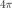
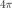
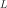
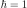
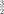

8.9. Density Functional Theory (DFT)¶
8.9.1. Many Body Schrödinger Equation¶
We use (Hartree) atomic units in this whole section about DFT.
We use the Born-Oppenheimer approximation, which says that the nuclei of the
treated atoms are seen as fixed. A stationary electronic state (for  electrons) is then described by a wave function
electrons) is then described by a wave function
 fulfilling the many-body Schrödinger equation
fulfilling the many-body Schrödinger equation

where

is the kinetic term,

is the electron-electron interaction term and

is the interaction term between electrons and nuclei, where  are positions
of nuclei and
are positions
of nuclei and  the number of nucleons in each nucleus (we are using atomic
units). So for one atomic calculation with the atom nucleus in the origin, we
have just
the number of nucleons in each nucleus (we are using atomic
units). So for one atomic calculation with the atom nucleus in the origin, we
have just  .
.
 gives the probability density of measuring the first
electron at the position
gives the probability density of measuring the first
electron at the position  , the second at , dots and the Nth
electron at the position
, the second at , dots and the Nth
electron at the position  . The normalization is such that
. The normalization is such that
 . The
. The  is antisymmetric,
i.e.
is antisymmetric,
i.e.  etc.
etc.
Integrating  over the first
over the first  electrons is the probability
density that the -th electron is at the position . Thus the
probability density
electrons is the probability
density that the -th electron is at the position . Thus the
probability density  that any of the N electrons (i.e the first, or
the second, or the third, dots, or the -th) is at the position
that any of the N electrons (i.e the first, or
the second, or the third, dots, or the -th) is at the position  is
called the particle (or number) density and is therefore given by:
is
called the particle (or number) density and is therefore given by:
![n({\bf r})= \int \Psi^*({\bf r},{\bf r}_2,\cdots,{\bf r}_N) \Psi ({\bf r},{\bf r}_2,\cdots,{\bf r}_N) \,\d^3 r_2\,\d^3 r_3\cdots\d^3 r_N+
+\int \Psi^*({\bf r}_1,{\bf r},\cdots,{\bf r}_N) \Psi ({\bf r}_1,{\bf r},\cdots,{\bf r}_N) \,\d^3 r_1\,\d^3 r_3\cdots\d^3 r_N+\cdots
+\int \Psi^*({\bf r}_1,{\bf r}_2,\cdots,{\bf r}) \Psi ({\bf r}_1,{\bf r}_2,\cdots,{\bf r}) \,\d^3 r_1\,\d^3 r_2\,\d^3 r_3\cdots\d^3 r_{N-1}=
=\int(\delta({\bf r}-{\bf r}_1)+\delta({\bf r}-{\bf r}_2)+\cdots+\delta({\bf r}-{\bf r}_N))
\Psi^*({\bf r}_1,{\bf r}_2,\cdots,{\bf r}_N) \Psi ({\bf r}_1,{\bf r}_2,\cdots,{\bf r}_N) \,\d^3 r_1\,\d^3 r_2\,\d^3 r_3\cdots\d^3 r_{N}=
=\sum_{i=1}^N\int \braket{\Psi|{\bf r}_1,{\bf r}_2,\cdots,{\bf r}_N}\delta({\bf r}-{\bf r}_i) \braket{{\bf r}_1,{\bf r}_2,\cdots,{\bf r}_N|\Psi} \,\d^3 r_1\,\d^3 r_2\,\d^3 r_3\cdots\d^3 r_{N}=
=N\int \braket{\Psi|{\bf r}_1,{\bf r}_2,\cdots,{\bf r}_N}\delta({\bf r}-{\bf r}_1) \braket{{\bf r}_1,{\bf r}_2,\cdots,{\bf r}_N|\Psi} \,\d^3 r_1\,\d^3 r_2\,\d^3 r_3\cdots\d^3 r_{N}=](../_images/math/9a891bc2bffef67121c8183ffbd29ed79675bfa0.svg)
(8.9.1.1)¶
Thus  gives the number of particles
in the region of integration
gives the number of particles
in the region of integration  . Obviously
. Obviously  .
.
Note that the number density and potential  in the
Schroedinger equation is related to the electron charge density
in the
Schroedinger equation is related to the electron charge density  and electrostatic potential energy
and electrostatic potential energy  by:
by:

where  is the particle elementary charge,
which for electrons is
is the particle elementary charge,
which for electrons is  in atomic units.
The amount of electronic charge in the region is given by:
in atomic units.
The amount of electronic charge in the region is given by:

The energy of the system is given by
(8.9.1.2)¶
where
![T=\braket{\Psi|\hat T|\Psi}=\sum_i^N\int \Psi^*({\bf r_1},{\bf r_2},\cdots,{\bf r_N})(-\half\nabla_i^2) \Psi({\bf r_1},{\bf r_2},\cdots,{\bf r_N})\,\d^3 r_1\,\d^3 r_2\cdots\d^3 r_N
U=\braket{\Psi|\hat U|\Psi}
V=\braket{\Psi|\hat V|\Psi}=\sum_i^N\int \Psi^*({\bf r_1},{\bf r_2},\cdots,{\bf r_N})v({\bf r_i}) \Psi({\bf r_1},{\bf r_2},\cdots,{\bf r_N})\,\d^3 r_1\,\d^3 r_2\cdots\d^3 r_N=
=\sum_i^N\int \Psi^*({\bf r_1},{\bf r_2},\cdots,{\bf r_N})v({\bf r_1}) \Psi({\bf r_1},{\bf r_2},\cdots,{\bf r_N})\,\d^3 r_1\,\d^3 r_2\cdots\d^3 r_N=
=N\int \Psi^*({\bf r_1},{\bf r_2},\cdots,{\bf r_N})v({\bf r_1}) \Psi({\bf r_1},{\bf r_2},\cdots,{\bf r_N})\,\d^3 r_1\,\d^3 r_2\cdots\d^3 r_N=](../_images/math/13f062541aec1012dd1ae93419dbd5b5fccaa651.svg)
(8.9.1.3)¶![=\int v({\bf r}) n({\bf r})\d^3 r=V[n]](../_images/math/fa9fb85c5f30eb21c5552ec082fff5a62f95cb02.svg)
It needs to be stressed, that  generally is not a functional of
generally is not a functional of  alone, only the
alone, only the ![V[n]](../_images/math/13142f303f64c3629b4a693df366cec30afbfc45.svg) is. In the next section we show however, that if the
is a ground state (of any system), then becomes a functional
of .
is. In the next section we show however, that if the
is a ground state (of any system), then becomes a functional
of .
8.9.2. The Hohenberg-Kohn Theorem¶
The Schrödinger equation gives the map

where is the ground state. C is bijective (one-to-one correspondence),
because to every  we can compute the corresponding from Schrödinger
equation and two different and
we can compute the corresponding from Schrödinger
equation and two different and  (differing by more than a constant)
give two different , because if and gave the same , then
by substracting
(differing by more than a constant)
give two different , because if and gave the same , then
by substracting

from

we would get  , which is a contradiction with the assumption that and differ by more than a constant.
, which is a contradiction with the assumption that and differ by more than a constant.
Similarly, from the ground state wavefunction we can compute the charge
density giving rise to the map

which is also bijective, because to every we can compute from
(8.9.1.1) and two different and give two different
and  , because different and give
, because different and give

adding these two inequalities together gives

which for  gives
gives  , which is nonsense, so
, which is nonsense, so  .
.
So we have proved that for a given ground state density  (generated by a potential
(generated by a potential  ) it is possible to calculate the
corresponding ground state wavefunction
) it is possible to calculate the
corresponding ground state wavefunction  , in other words,
, in other words,  is a unique functional of :
is a unique functional of :
![\Psi_0=\Psi_0[n_0]](../_images/math/3dd5f1b0d2c27d971ef540a46c7362a5e81b4610.svg)
so the ground state energy  is also a functional of
is also a functional of
![E_0=\braket{\Psi_0[n_0]|\hat T+\hat U+\hat V_0|\Psi_0[n_0]}=E[n_0]](../_images/math/676d06550b7aa81609e025ebdd29d6102d3ee894.svg)
We define an energy functional
(8.9.2.1)¶![E_{v_0}[n]=\braket{\Psi[n]|\hat T+\hat U+\hat V_0|\Psi[n]}= \braket{\Psi[n]|\hat T+\hat U|\Psi[n]}+\int v_0({\bf r})n({\bf r})\d^3r](../_images/math/6d5b261969040fe9b629a8e45d0c97308077bc0e.svg)
where ![\ket{\Psi[n]}](../_images/math/89b8066df8f20c6ec933f189186d8a57402042bd.svg) is any ground state wavefunction (generated by an
arbitrary potential), that is, is a ground state density belonging to an
arbitrary system. which is generated by the potential can then be
expressed as
is any ground state wavefunction (generated by an
arbitrary potential), that is, is a ground state density belonging to an
arbitrary system. which is generated by the potential can then be
expressed as
![E_0=E_{v_0}[n_0]](../_images/math/20050036c0bf75695d39c9452aedf190b2b71928.svg)
and for  we have (from the Ritz principle)
we have (from the Ritz principle)
![E_0<E_{v_0}[n]](../_images/math/a5a511641b31267668a3b41c5d314c8f8df27e61.svg)
and one has to minimize the functional ![E_{v_0}[n]](../_images/math/51b5a8b4758821a7bd7c171adcb2cff517bd823c.svg) :
:
(8.9.2.2)¶![E_0=\min_n E_{v_0}[n]](../_images/math/779ecea80440f9af4776d983e110afa56d65a0a9.svg)
The term
![\braket{\Psi[n]|\hat T+\hat U|\Psi[n]}\equiv F[n]](../_images/math/96b505cba51e6602021f7d6817659026465c09d1.svg)
in (8.9.2.1) is universal in the sense that it doesn’t depend on  . It can be proven [DFT], that
. It can be proven [DFT], that ![F[n]](../_images/math/1fee36cb301892c5f58d545eff8018a412e816dd.svg) is a functional of for
degenerated ground states too, so (8.9.2.2) stays true as well.
is a functional of for
degenerated ground states too, so (8.9.2.2) stays true as well.
The ground state densities in (8.9.2.1) and (8.9.2.2) are called
pure-state v-representable because they are the densities of (possible
degenerate) ground state of the Hamiltonian with some local potential  . One may ask a question if all possible functions are v-representable
(this is called the v-representability problem). The question is relevant,
because we need to know which functions to take into account in the
minimization process (8.9.2.2). Even though not every function is
v-representable [DFT], every density defined on a grid (finite of
infinite) which is strictly positive, normalized and consistent with the Pauli
principle is ensemble v-representable. Ensemble v-representation is just a
simple generalization of the above, for details see [DFT].
. One may ask a question if all possible functions are v-representable
(this is called the v-representability problem). The question is relevant,
because we need to know which functions to take into account in the
minimization process (8.9.2.2). Even though not every function is
v-representable [DFT], every density defined on a grid (finite of
infinite) which is strictly positive, normalized and consistent with the Pauli
principle is ensemble v-representable. Ensemble v-representation is just a
simple generalization of the above, for details see [DFT].
The functional in (8.9.2.2) depends on the particle number ,
so in order to get , we need to solve the variational formulation
![{\delta\over\delta n}\left(E_v[n]-\mu(N)\int n(\bf r)\d^3r\right)=0](../_images/math/9bf2233b11830afd21067c908c77c6babd1fb973.svg)
so
(8.9.2.3)¶![{\delta E_v[n]\over\delta n}=\mu(N)](../_images/math/0769b15221abc7cf88c3ac8abbb9f64816240630.svg)
Let the  be the solution of (8.9.2.3) with a particle number
and the energy
be the solution of (8.9.2.3) with a particle number
and the energy  :
:
![E_N=E_v[n_N]](../_images/math/3f96f528d4ac0e6018fe5cba590774a03a28d6cd.svg)
The Lagrangian multiplier  is the exact chemical potential of the system
is the exact chemical potential of the system

becuase
![E_{N+\epsilon}-E_N=E_v[n_{N+\epsilon}]-E_v[n_N] =\int {\delta E_v\over\delta n} (n_{N+\epsilon}-n_N)\d^3r=
=\int \mu(N) (n_{N+\epsilon}-n_N)\d^3r =\mu(N)(N+\epsilon-N)=\mu(N)\epsilon](../_images/math/4f3bf09ec959d3cfb7a5bb7697cb3059996a0ab2.svg)
so

8.9.3. The Kohn-Sham Equations¶
Consider an auxiliary system of noninteracting electrons (noninteracting
gas):

the Schrödinger equation then becomes:

and the total energy is:
![E_s[n]=T_s[\{\psi_i[n]\}]+V_s[n]](../_images/math/8a58c7805a703d79b0293c2b611cdb711da495ed.svg)
where
![T_s[n]=\braket{\Psi[n]|\hat T|\Psi[n]}= \sum_i\braket{\psi_i|-\half\nabla^2|\psi_i}
V_s[n]=\braket{\Psi[n]|\hat V|\Psi[n]}=\int v_s({\bf r})n({\bf r})\d^3r](../_images/math/a629433ef98fe785db9032ead631753111379f4e.svg)
So:
![E_s[n] = \sum_i\braket{\psi_i|-\half\nabla^2|\psi_i} +
\int v_s({\bf r})n({\bf r})\d^3r
=
= \sum_i\int \psi_i^* \left(-\half\nabla^2\right)\psi_i\,\d^3 r +
\int v_s({\bf r})\sum_i\psi_i^* \psi_i\, \d^3r
=
= \sum_i\int \psi_i^* \left(-\half\nabla^2 + v_s({\bf r})\right)
\psi_i\,\d^3 r
=
= \sum_i \epsilon_i\int \psi_i^* \psi_i\,\d^3 r =
= \sum_i \epsilon_i](../_images/math/89c03f0ada58218a293e13d7a558b8609c012353.svg)
The total energy is the sum of eigenvalues (energies of the individual independent particles) as expected. From the last equation it follows:
![T_s[n] = \sum_i\braket{\psi_i|-\half\nabla^2|\psi_i}
= \sum_i \epsilon_i -\int v_s({\bf r})n({\bf r})\d^3r](../_images/math/1184faeb31ecba792e683555ae97fa7e5dd74aeb.svg)
In other words, the kinetic energy of the noninteracting particles is equal to
the sum of eigenvalues minus the potential energy coming from the total
effective potential used to construct the single particle orbitals
 .
.
From (8.9.2.3) we get
(8.9.3.1)¶![\mu={\delta E_s[n]\over\delta n({\bf r})}= {\delta T_s[n]\over\delta n({\bf r})}+{\delta V_s[n]\over\delta n({\bf r})}= {\delta T_s[n]\over\delta n({\bf r})}+v_s({\bf r})](../_images/math/6438e03b873d1af308cdad8d82e3b7084f5afe4b.svg)
Solution to this equation gives the density .
Now we want to express the energy in (8.9.1.2) using  and
and  for convenience, where is the classical electrostatic interaction energy
of the charge distribution , defined using following relations
- we start with a Poisson equation in atomic units
for convenience, where is the classical electrostatic interaction energy
of the charge distribution , defined using following relations
- we start with a Poisson equation in atomic units

and substitute  ,
,
 and we use the fact that
and we use the fact that  in atomic
units:
in atomic
units:

or equivalently by expressing  using the Green function:
using the Green function:
(8.9.3.2)¶
and finally is related to using:

so we get:
![E_H[n]=\half\int\int {n({\bf r})n({\bf r'})\over|{\bf r}-{\bf r'}|} \d^3r\d^3r'](../_images/math/127fc390ef5e64540db60a23db6b1d8396f2af80.svg)
Using the rules for functional differentiation, we can check that:

Using the above relations, we can see that
![E_H[n]=\half\int V_H({\bf r}) n({\bf r}) \d^3r](../_images/math/99c1c1215ab8dfd4a3bc48742cfd5a9203f8c55a.svg)
So from (8.9.2.1) we get
(8.9.3.3)¶![E[n]=(T+U)[n]+V[n]=T_s[n]+E_H[n]+(T-T_s+U-E_H)[n]+V[n]=
=T_s[n]+E_H[n]+E_{xc}[n]+V[n]](../_images/math/a987fee51ab8a04505691364c698c2d06ddd6071.svg)
The rest of the energy is denoted by  and it is called is
the exchange and correlation energy functional. From (8.9.2.3)
and it is called is
the exchange and correlation energy functional. From (8.9.2.3)
![\mu={\delta E[n]\over\delta n({\bf r})}= {\delta T_s[n]\over\delta n({\bf r})}+ {\delta E_H[n]\over\delta n({\bf r})}+ {\delta E_{xc}[n]\over\delta n({\bf r})}+ {\delta V[n]\over\delta n({\bf r})}](../_images/math/97b4f6fd248d2078ac4599c255ae5d168b029ea2.svg)
From (8.9.3.2) we have

from (8.9.1.3) we get
![{\delta V[n]\over\delta n({\bf r})}=v({\bf r})](../_images/math/a1dc0d15c1572d207eac7e188db84faeb991de8c.svg)
we define
(8.9.3.4)¶![{\delta E_{xc}[n]\over\delta n({\bf r})}=V_{xc}({\bf r})](../_images/math/a44616b1c879fd6693bb8d3928f5e0caa66acda5.svg)
so we arrive at
(8.9.3.5)¶![\mu={\delta E[n]\over\delta n({\bf r})}= {\delta T_s[n]\over\delta n({\bf r})}+V_H({\bf r})+V_{xc}({\bf r})+v({\bf r})](../_images/math/610fa24dbabba34f266c2df3172a90a6dcd0d6f6.svg)
Solution to this equation gives the density . Comparing (8.9.3.5) to
(8.9.3.1) we see that if we choose
(8.9.3.6)¶
then  . So we solve the Kohn-Sham equations of
this auxiliary non-interacting system
. So we solve the Kohn-Sham equations of
this auxiliary non-interacting system
(8.9.3.7)¶
which yield the orbitals that reproduce the density of the original interacting system
(8.9.3.8)¶
The sum is taken over the lowest energies. Some of the can be
degenerated, but it doesn’t matter - the index  counts every eigenfunction
including all the degenerated. In plain words, the trick is in realizing, that
the ground state energy can be found by minimizing the energy functional
(8.9.2.1) and in rewriting this functional into the form (8.9.3.3),
which shows that the interacting system can be treated as a noninteracting one
with a special potential.
counts every eigenfunction
including all the degenerated. In plain words, the trick is in realizing, that
the ground state energy can be found by minimizing the energy functional
(8.9.2.1) and in rewriting this functional into the form (8.9.3.3),
which shows that the interacting system can be treated as a noninteracting one
with a special potential.
8.9.4. The XC Term¶
The exchange and correlation functional
![E_{xc}[n]=(T+U)[n]-E_H[n]-T_S[n]](../_images/math/b7178c0a2a37f3a2fa6868feb79f4dcc9d85d568.svg)
can always be written in the form
![E_{xc}[n]=\int n({\bf r}')\epsilon_{xc}({\bf r}';n)\d^3r'](../_images/math/fda68fa6b8c2fe205bec1772e7dc2f537c266a27.svg)
where the  is called the XC energy density.
The XC potential is defined as:
is called the XC energy density.
The XC potential is defined as:
![V_{xc}({\bf r};n) = {\delta E_{xc}[n]\over\delta n({\bf r})}
= \epsilon_{xc}({\bf r};n)+ \int n({\bf r}')
{\delta \epsilon_{xc}({\bf r}';n)\over\delta n({\bf r})}\d^3r'](../_images/math/c2ed55d63458d9d40b19e6578b0eec4f66af68af.svg)
8.9.5. Total Energy¶
We already derived all the necessary things above, so we just summarize it here. The total energy is given by:
where
![T_s[n] = \sum_i \epsilon_i -\int v_s({\bf r})n({\bf r})\d^3r
E_H[n] = \half\int V_H({\bf r}) n({\bf r}) \d^3r
E_{xc}[n]=\int \epsilon_{xc}({\bf r};n) n({\bf r}) \d^3r
V[n]=\int v({\bf r}) n({\bf r}) \d^3r](../_images/math/a5c2d6eb546c496a9f60edc8ca9052e40839d74b.svg)
This is the correct, quadratically convergent expression for the total energy.
We use the whole input potential  and its associated
eigenvalues to calculate the kinetic energy
and its associated
eigenvalues to calculate the kinetic energy ![T_s[n]](../_images/math/a830711bc4b66e78bce0badbb305464d9d0aa5e4.svg) , this follows
from the derivation of the expression for . Then we use the calculated
charge density to express
, this follows
from the derivation of the expression for . Then we use the calculated
charge density to express ![E_H[n]](../_images/math/c7e422447666520ee052a8977a4a9b944bdff96c.svg) ,
, ![E_{xc}[n]](../_images/math/2ae467681b27e3cb3fbaf249f6082134d2f338c3.svg) and .
and .
If one is not careful about the potential associated with the eigenvalues, i.e., confusing with , one gets a slowly converging formula for the total energy. By expanding using (8.9.3.6):
![\int v_s n({\bf r})\d^3 r
= \int (V_H + V_{xc} + v) n({\bf r})\d^3 r
= 2 \half\int V_H n({\bf r})\d^3 r
+ \int V_{xc} n({\bf r})\d^3 r
+ \int v n({\bf r})\d^3 r =
= 2 E_H[n] + \int V_{xc} n({\bf r})\d^3 r + V[n]](../_images/math/24ede416b77b5dd1de68ecdd4a78b053afd06b0f.svg)
So is equal to:
![T_s[n] = \sum_i \epsilon_i -\int v_s({\bf r})n({\bf r})\d^3r =
= \sum_i \epsilon_i - 2 E_H[n] - \int V_{xc} n({\bf r})\d^3 r - V[n]](../_images/math/336f8439eecbb41f738b2f3064651138a74efd71.svg)
And then the slowly converging form of total energy is:
![E[n] = T_s[n]+E_H[n]+E_{xc}[n]+V[n]
= \sum_i \epsilon_i - 2 E_H[n] - \int V_{xc} n({\bf r})\d^3 r - V[n]
+E_H[n]+E_{xc}[n]+V[n] =
= \sum_i \epsilon_i - E_H[n] + E_{xc}[n]
-\int V_{xc}({\bf r};n) n({\bf r}) \d^3r](../_images/math/d615d3591e6ceef9c7f680573e865752cdfca45d.svg)
The reason it is slowly converging is because the new formula for kinetic
energy is mixing with , so it is not as precise (see above)
and converges much slower with SCF iterations. Once self-consistency has been
achieved (i.e.  ), the two expressions for total energy are
equivalent.
), the two expressions for total energy are
equivalent.
8.9.6. XC Approximations¶
All the expressions above are exact (no approximation has been made so far).
Unfortunately, no one knows exactly (yet). As such,
various approximations for it exist.
LDA¶
The most
simple approximation is the local density approximation (LDA), for which the
xc energy density  at is taken as that of a homogeneous
electron gas (the nuclei are replaced by a uniform positively charged
background, density ) with the same local density:
at is taken as that of a homogeneous
electron gas (the nuclei are replaced by a uniform positively charged
background, density ) with the same local density:

The xc potential  defined by (8.9.3.4) is then
defined by (8.9.3.4) is then
![V_{xc}({\bf r};n)={\delta E_{xc}[n]\over\delta n({\bf r})}= \epsilon_{xc}({\bf r};n)+ \int n({\bf r}'){\delta \epsilon_{xc}({\bf r}';n)\over\delta n({\bf r})}\d^3r'](../_images/math/2a25ad386f66f223c6ce93ee6ff79d1b5d17f85d.svg)
which in the LDA becomes
(8.9.6.1)¶
The xc energy density  of the homogeneous gas can be
computed exactly:
of the homogeneous gas can be
computed exactly:

where the is the electron gas exchange term given by

the rest of is hidden in  for which
there doesn’t exist an analytic formula, but the correlation energies are known
exactly from quantum Monte Carlo (QMC) calculations by Ceperley and
Alder [pickett]. The energies were fitted by Vosko, Wilkes and Nussair
(VWN) with and they got accurate results with errors less
than
for which
there doesn’t exist an analytic formula, but the correlation energies are known
exactly from quantum Monte Carlo (QMC) calculations by Ceperley and
Alder [pickett]. The energies were fitted by Vosko, Wilkes and Nussair
(VWN) with and they got accurate results with errors less
than  in , which means that
is virtually known exactly. VWN result:
in , which means that
is virtually known exactly. VWN result:
![\epsilon_c^{LD}(n)\approx {A\over2}\left\{ \ln\left(y^2\over Y(y)\right)+{2b\over Q}\arctan\left(Q\over 2y+b\right)+ \right.
\left. -{by_0\over Y(y_0)}\left[\ln\left((y-y_0)^2\over Y(y)\right) +{2(b+2y_0)\over Q}\arctan\left(Q\over 2y+b\right) \right] \right\}](../_images/math/5c757e6b51f17b512dcd6e2f168d5b53a3ced3f9.svg)
where  ,
,  ,
,  ,
,  ,
,
 ,
,  (note that the value of
(note that the value of  is wrong in
[pickett]), and
is wrong in
[pickett]), and  is the electron gas
parameter, which gives the mean distance between electrons (in atomic units):
is the electron gas
parameter, which gives the mean distance between electrons (in atomic units):

The xc potential is then computed from (8.9.6.1):
![V_{xc}^{LD}=V_x^{LD}+V_c^{LD}
V_x^{LD}=-{1\over\pi}(3\pi^2 n)^{1\over3} = {4\over 3}\epsilon_x^{LD}
V_c^{LD}={A\over2}\left\{ \ln\left(y^2\over Y(y)\right)+{2b\over Q}\arctan\left(Q\over 2y+b\right)+ \right.
\left. -{by_0\over Y(y_0)}\left[\ln\left((y-y_0)^2\over Y(y)\right) +{2(b+2y_0)\over Q}\arctan\left(Q\over 2y+b\right) \right] \right\}+
-{A\over6}{c(y-y_0)-by_0y\over (y-y_0)Y(y)}](../_images/math/beddbf95d3ff2934d6d4bc62c3ebe09e9c79c592.svg)
Some people also use Perdew and Zunger formulas, but they give essentially the same results. The LDA, although very simple, is surprisingly successful. More sophisticated approximations exist, for example the generalized gradient approximation (GGA), which sometimes gives better results than the LDA, but is not perfect either. Other options include orbital-dependent (implicit) density functionals or a linear response type functionals, but this topic is still evolving. The conclusion is, that the LDA is a good approximation to start with, and only when we are not satisfied, we will have to try some more accurate and modern approximation.
RLDA¶
Relativistic corrections to the energy-density functional (RLDA) were proposed by MacDonald and Vosko:

where

We now calculate :
(8.9.6.2)¶
where the derivative  can be evaluated as follows:
can be evaluated as follows:

And  in exactly the same manner:
in exactly the same manner:

So we can write

where

where we used the derivative of , which after a tedious, but straightforward differentiation is:

Plugging this back in, we get:
![V_x^{RLD} = V_x^{LD}\left(R+{1\over4}\beta{\d R\over\d\beta}\right)
=
=
V_x^{LD}\left(1-{3\over 2}A^2 +{1\over4}\beta(-6A)
\left({1\over\mu} - {A\over\beta}\right)
\right)
=
=
V_x^{LD}\left(1-{3\over 2}A^2 + {6\over4} A^2-{6\over4}\beta {A\over\mu}
\right)
=
=
V_x^{LD}\left(1-{3\over2}{\beta\over\mu} A
\right)
=
=
V_x^{LD}\left(1-{3\over2}{\beta\over\mu} \left(
\beta\mu - \log(\beta+\mu) \over \beta^2\right)
\right)
=
=
V_x^{LD}\left(1-{3\over2} \left(
\beta\mu - \log(\beta+\mu) \over \beta\mu\right)
\right)
=
= V_x^{LD}\left({3\log(\beta+\mu) \over 2\beta\mu}-\half\right)](../_images/math/1a3f70cde97a9c93ae0b28a287b7a39336b27631.svg)
For  we get
we get  ,
,  and
and  as expected, because
as expected, because

Code:
>>> from sympy import limit, var, sqrt, log
>>> var("beta")
beta
>>> limit((beta*sqrt(1+beta**2) - log(beta+sqrt(1+beta**2)))/beta**2, beta, 0)
0
8.9.7. Radial DFT Problem¶
Kohn-Sham Equations¶
For spherically symmetric potentials, we write all eigenfunctions as:

and we need to solve the following Kohn-Sham equations:

With normalization:

For Schroedinger equation, the charge density is calculated by adding all “(n, l, m)” states together, counting each one twice (for spin up and spin down):

where we have introduced the occupation numbers  by
by

Normalization of the charge density is:

So we can see, that it must hold:

where  is the atomic number (number of electrons), and as such, are
indeed the occupation numbers (integers). The factor  is
explicitly factored out, as it cancels with the spherical harmonics:
assuming all
is the atomic number (number of electrons), and as such, are
indeed the occupation numbers (integers). The factor  is
explicitly factored out, as it cancels with the spherical harmonics:
assuming all  states are occupied, this can be simplified to:
states are occupied, this can be simplified to:

We can also use this machinery to prescribe “chemical occupation numbers”, that
don’t necessarily correspond to the DFT ground state. For example for  atom
we get:
atom
we get:

By summing all these , we get 92 as expected:

But this isn’t the DFT ground state, because some KS energies are skipped, for
example there is only one state for  ,
,  , but there are nine more
states with the same energy — instead two more states are occupied in
, but there are nine more
states with the same energy — instead two more states are occupied in  ,
,
 , but those have higher energy. So this corresponds to excited DFT state,
strictly speaking not physically valid in the DFT formalism, but in practice
this approach is often used. One can also prescribe fractional occupation
numbers (in the Dirac case).
, but those have higher energy. So this corresponds to excited DFT state,
strictly speaking not physically valid in the DFT formalism, but in practice
this approach is often used. One can also prescribe fractional occupation
numbers (in the Dirac case).

Total Energy¶
The total energy is given by:
![E[n]= T_s[n]+E_H[n]+E_{xc}[n]+V[n]](../_images/math/22879a56590be5b390151d89760f8391f823dde2.svg)
where
![T_s[n] = \sum_{nl} f_{nl}\epsilon_{nl}
-\int (V_H(r) + V_{xc}(r) + v(r))_{in} n(r) \d^3 r
=
= \sum_{nl} f_{nl}\epsilon_{nl}
-\int \left(V_H(r) + V_{xc}(r) -{Z\over r}\right)_{in} n(r) \d^3 r
E_H[n] = \half\int V_H(r) n(r) \d^3r
E_{xc}[n]=\int \epsilon_{xc}(r;n) n(r) \d^3r
V[n]=\int v(r) n(r) \d^3r = -\int {Z\over r} n(r) \d^3r](../_images/math/b65317b082f09f46d4c4ef89521cccf660f47349.svg)
doing the integrals a bit we get:
![T_s[n] = \sum_{nl} f_{nl}\epsilon_{nl}
-4\pi\int \left(V_H(r) + V_{xc}(r) -{Z\over r}\right)_{in} n(r)
r^2\,\d r
E_H[n] = 2\pi\int V_H(r) n(r)r^2\, \d r
E_{xc}[n]=4\pi\int \epsilon_{xc}(r;n) n(r)r^2\, \d r
V[n]=-4\pi \int {Z\over r} n(r)r^2\, \d r
=-4\pi Z \int n(r)r\, \d r](../_images/math/d0f6f16a8dba8065e97b190d5121953cdcf43192.svg)
We can also express everything using the charge density  :
:
![T_s[n] = \sum_{nl} f_{nl}\epsilon_{nl}
+4\pi\int \left(V_H(r) + V_{xc}(r) -{Z\over r}\right)_{in} \rho(r)
r^2\,\d r
E_H[n] = -2\pi\int V_H(r) \rho(r)r^2\, \d r
E_{xc}[n]=-4\pi\int \epsilon_{xc}(r;n) \rho(r)r^2\, \d r
V[n]=4\pi \int {Z\over r} \rho(r)r^2\, \d r
=4\pi Z \int \rho(r)r\, \d r](../_images/math/01d4173e5e41da261dcb1f61093105bafde4aac0.svg)
8.9.8. DFT As a Nonlinear Problem¶
The task is to find such a charge density , so that all the equations below
hold (e.g. are self-consistent):

This is a standard nonlinear problem, except that the Jacobian is dense, as shown below.
Reformulation¶
Let’s write everything in terms of  explicitly:
explicitly:

Now we can write everything as just one (nonlinear) equation:

FE Discretization¶
The correspondig discrete problem has the form
![\int_\Omega \nabla\phi_n(x)\cdot\nabla v_i(x)+\left[
-{Z\over r}+
\int_\Omega {
\sum_{m=1}^4 \phi_m^2(x')
\over|x' - x|}\d x'
+f\left( \sum_{m=1}^4\phi_m^2(x) \right)
\right]
\phi_n(x) v_i(x) \d x=
=\int_\Omega
\epsilon_n\phi_n(x) v_i(x) \d x,\quad\quad n = 1, 2, \dots, 4;\quad
i = 1, 2, \dots, N](../_images/math/152bba972c7467f09c1ceceb6c63cf6277681424.svg)
where

Here  is the vector
of unknown coefficients for the -th wavefunction
is the vector
of unknown coefficients for the -th wavefunction  . Our equation
can then be written in the compact form
. Our equation
can then be written in the compact form

where  with
with
![F_i({\bf Y}^{(n)}) =
\int_\Omega \nabla\phi_n(x)\cdot\nabla v_i(x)+\left[
-{Z\over r}+
\int_\Omega {
\sum_{m=1}^4 \phi_m^2(x')
\over|x' - x|}\d x'
+f\left( \sum_{m=1}^4\phi_m^2(x) \right)
\right]
\phi_n(x) v_i(x) \d x-
-\int_\Omega
\epsilon_n\phi_n(x) v_i(x) \d x](../_images/math/640d977ab9cb8e57590f01fc74247596bed2983a.svg)
Jacobian¶
The Jacobi matrix has the elements:

The only possible dense term is:
![{\partial\over\partial y_k^{(s)}}\int_\Omega \int_\Omega {
\sum_{m=1}^4 \phi_m^2(x')
\over|x' - x|}\d x'\,\phi_n(x) v_i(x) \d x =
=
{\partial\over\partial y_k^{(s)}}\int_\Omega \int_\Omega {
\sum_{m=1}^4 \left(\sum_{j=1}^N y_j^{(m)} v_j(x')\right)^2
\over|x' - x|}\d x'\, \left(\sum_{j=1}^N y_j^{(n)} v_j(x)\right) v_i(x) \d x =
=
\int_\Omega \int_\Omega {
2 \left(\sum_{j=1}^N y_j^{(s)} v_j(x')\right)v_k(x')
\over|x' - x|}\d x'\, \left(\sum_{j=1}^N y_j^{(n)} v_j(x)\right) v_i(x) \d x +
+
\int_\Omega \int_\Omega {
\sum_{m=1}^4 \left(\sum_{j=1}^N y_j^{(m)} v_j(x')\right)^2
\over|x' - x|}\d x'\, \delta_{ns}v_k(x) v_i(x) \d x](../_images/math/6ba0ec918af83d0046e3f1f3cac64ed86fc63ac9.svg)
Now we can see that we have in there the following term:

which is dense in , as can be easily seen be fixing and writing

so for each  there is some contribution from the integral
there is some contribution from the integral  for such
for such  where
where  is nonzero, thus
making the Jacobian
is nonzero, thus
making the Jacobian  dense.
dense.
8.9.9. Thomas-Fermi-Dirac Theory¶
There are two ways to derive equations for Thomas-Fermi-Dirac theory. One way is to start from grand potential and derive all equations from it. The other way is to start with low level equations and build our way up. Will start with the former.
Top Down Approach¶
We start with a grand potential for fermions:
![\Omega[\beta, \mu]
= -\sum_i {1\over\beta}
\log\left(\sum_{N=0}^1 e^{-\beta\left(N\epsilon_i - N\mu\right)}\right)
=
= -\sum_i {1\over\beta}
\log\left(1 + e^{-\beta\left(\epsilon_i - \mu\right)}\right)
=
= -{1\over\beta}
\int \int {2\d^3 x \d^3 p \over (2\pi)^3} \log\left(1 +
e^{-\beta\left({p^2\over 2} + V({\bf x}) - \mu\right)}\right)
-E_{ee} - {1\over3}E_{xc} =
= -{2\over\beta}
\int \d^3 x \int_0^\infty{ 4\pi p^2 \d p \over (2\pi)^3} \log\left(1 +
e^{-\beta\left({p^2\over 2} + V({\bf x}) - \mu\right)}\right)
-E_{ee} - {1\over3}E_{xc} =
= -{1\over \pi^2 \beta}
\int \d^3 x \int_0^\infty p^2 \log\left(1 +
e^{-\beta\left({p^2\over 2} + V({\bf x}) - \mu\right)}\right) \d p
-E_{ee} - {1\over3}E_{xc} =
= -{2\sqrt2 \over 3 \pi^2 \beta^{5\over2}}
\int \d^3 x \int_0^\infty {u^{3\over2} \over
1 + e^{u-\beta\left(\mu-V({\bf x})\right)}} \d u
-E_{ee} - {1\over3}E_{xc} =
= -{2\sqrt2 \over 3 \pi^2 \beta^{5\over2}}
\int I_{3\over2}\left(\beta\left(\mu-V({\bf x})\right)\right) \,\d^3 x
-E_{ee} - {1\over3}E_{xc} =
= -{2\sqrt2 \over 3 \pi^2 \beta^{5\over2}}
\int I_{3\over2}\left(\beta\left(\mu-V({\bf x})\right)\right) \,\d^3 x
-E_{ee} - {1\over3}E_{xc}](../_images/math/4f626430d3e98095588b55043ef074947f7700b5.svg)
The potential
 is the total potential that the electrons experience (it contains nuclear,
Hartree, and XC terms) and is the Hartree energy:
is the total potential that the electrons experience (it contains nuclear,
Hartree, and XC terms) and is the Hartree energy:

For simplicity, we assume here that only contains the exchange of the
homogeneous electron gas. For a general XC functional, the relation is
nonlinear and one must simply numerically calculate the XC energy density
 and calculate the XC energy using:
and calculate the XC energy using:

In our case here, we have  , which is only
true for the exchange in homogeneous electron gas. Otherwise the relation is
nonlinear. In the general case, the correction that must be applied is:
, which is only
true for the exchange in homogeneous electron gas. Otherwise the relation is
nonlinear. In the general case, the correction that must be applied is:

The density is a functional derivative with respect to
:
![n_e({\bf x}) = - {\delta \Omega[\beta, \mu] \over \delta \mu}
= {2\sqrt2 \over 3 \pi^2 \beta^{5\over2}}
{\partial \over \partial \mu}
I_{3\over2}\left(\beta\left(\mu-V({\bf x})\right)\right)
= {2\sqrt2 \over 3 \pi^2 \beta^{5\over2}}
\beta {3\over 2} I_{1\over2}
\left(\beta\left(\mu-V({\bf x})\right)\right) =
= {\sqrt2 \over \pi^2 \beta^{3\over2}} I_{1\over2}
\left(\beta\left(\mu-V({\bf x})\right)\right)](../_images/math/1b2dc6bbaa14558b5cdaf53ca19eeed9751db0e3.svg)
By defining the function  :
:

we can express the grand potential using  as follows:
as follows:
![\Omega[\beta, n_e]
= -{2\sqrt2 \over 3 \pi^2 \beta^{5\over2}}
\int I_{3\over2}(\Phi(n_e({\bf x}))) \, \d^3 x
- \half \int n_e(\mathbf{x}) V_{ee}(\mathbf{x}) \d^3
- {1\over 4} \int n_e(\mathbf{x}) V_{xc}(\mathbf{x}) \d^3 x\,.](../_images/math/dbc76805e98ba154e1eb65fb32e1b5bc2cdf5db8.svg)
Now we can calculate the free energy:
![F_e[\beta, n_e] = \Omega[\beta, n_e] + \mu N
= \Omega[\beta, n_e] + \mu \int n_e({\bf x}) \,\d^3 x =
= \int \left(-{2\sqrt2 \over 3 \pi^2 \beta^{5\over2}}
I_{3\over2}(\Phi(n_e({\bf x})))
+ \mu n_e({\bf x})
- n_e(\mathbf{x}) \left(
\half V_{ee}(\mathbf{x})
+{1\over 4} V_{xc}(\mathbf{x})
\right)
\right)\d^3 x =
= \int \left(-{2\sqrt2 \over 3 \pi^2 \beta^{5\over2}}
I_{3\over2}(\Phi(n_e({\bf x})))
+ {1\over \beta} n_e({\bf x}) \Phi(n_e({\bf x}))
+ n_e({\bf x}) V({\bf x})
- n_e(\mathbf{x}) \left(
\half V_{ee}(\mathbf{x})
+{1\over 4} V_{xc}(\mathbf{x})
\right)
\right)\d^3 x =
= \int \left(-{2\sqrt2 \over 3 \pi^2 \beta^{5\over2}}
I_{3\over2}(\Phi(n_e({\bf x})))
+ {1\over \beta} n_e({\bf x}) \Phi(n_e({\bf x}))
+ n_e({\bf x})\left( V_{en}({\bf x})
+\half V_{ee}(\mathbf{x})
+ {3\over 4} V_{xc}(\mathbf{x}) \right)
\right)\d^3 x\,,](../_images/math/105d1fd2ebdccf979012a43b521de442faa76320.svg)
where we used the fact that  , i.e. the left hand side is a constant, thus the sum of the terms on
the right hand side is also constant (even though the individual terms are
not).
, i.e. the left hand side is a constant, thus the sum of the terms on
the right hand side is also constant (even though the individual terms are
not).
We can calculate the entropy
 as follows:
as follows:
![TS
=-T \left(\partial\Omega\over\partial T\right)_{V,\mu} =
=\beta \left(\partial\Omega\over\partial \beta\right)_{V,\mu} =
=\beta {\partial\over\partial \beta}\left(
-{2\sqrt2 \over 3 \pi^2 \beta^{5\over2}}
\int I_{3\over2}(\Phi(n_e({\bf x}))) \, \d^3 x
- E_{ee} - {1\over3}E_{xc}
\right) =
=\beta {\partial\over\partial \beta}\left(
-{2\sqrt2 \over 3 \pi^2 \beta^{5\over2}}
\int I_{3\over2}(\Phi(n_e({\bf x}))) \, \d^3 x
\right) =
=\beta \left(
{5\over2}{2\sqrt2 \over 3 \pi^2 \beta^{7\over2}}
\int I_{3\over2}(\Phi(n_e({\bf x}))) \, \d^3 x
-{2\sqrt2 \over 3 \pi^2 \beta^{5\over2}}
\int {3\over2} I_{1\over2}(\Phi(n_e({\bf x})))
{\partial\Phi(n_e({\bf x}))\over\partial\beta}
\, \d^3 x
\right) =
=\beta \left(
{5\over2}{2\sqrt2 \over 3 \pi^2 \beta^{7\over2}}
\int I_{3\over2}(\Phi(n_e({\bf x}))) \, \d^3 x
-{2\sqrt2 \over 3 \pi^2 \beta^{5\over2}}
\int {3\over2} I_{1\over2}(\Phi(n_e({\bf x})))
(\mu-V({\bf x}))
\, \d^3 x
\right) =
= {5\over2}{2\sqrt2 \over 3 \pi^2 \beta^{5\over2}}
\int I_{3\over2}(\Phi(n_e({\bf x}))) \, \d^3 x
- \int n_e({\bf x}) (\mu-V({\bf x})) \, \d^3 x =
= {5\over3}{\sqrt2 \over \pi^2 \beta^{5\over2}}
\int I_{3\over2}(\Phi(n_e({\bf x}))) \, \d^3 x
-\mu N + E_{en}+2E_{ee} + {4\over 3}E_{xc}](../_images/math/764f4be48a69685d62cba8076de98f326c4b9064.svg)
The total energy is then equal to:

From which we can see that the kinetic energy is equal to:

The relation between the total energy and free energy can be also written as:

But it gives the same result as we obtained above.
To determine the kinetic part of the free energy, we set all potentials equal
to zero ( ) and obtain:
) and obtain:
![F_{kin}[\beta, n_e]
= \int \left(-{2\sqrt2 \over 3 \pi^2 \beta^{5\over2}}
I_{3\over2}(\Phi(n_e({\bf x})))
+ {1\over \beta} n_e({\bf x}) \Phi(n_e({\bf x}))
\right)\d^3 x\,.](../_images/math/53f9c0eb9ffd9a8080e854327e105f5125e09b9f.svg)
If the potentials are zero, then the pressure can be calculated from:
![P = -{1\over V}\Omega[\beta, n_e]
= {2\sqrt2 \over 3 \pi^2 \beta^{5\over2}V}
\int I_{3\over2}(\Phi(n_e({\bf x}))) \,\d^3 x =
= {2\sqrt2 \over 3 \pi^2 \beta^{5\over2}V}
\int I_{3\over2}(\beta\mu) \,\d^3 x
= {2\sqrt2 \over 3 \pi^2 \beta^{5\over2}} I_{3\over2}(\beta\mu) \,.](../_images/math/2d5c767b29c211d93b0a2bf3858c6905db77521c.svg)
If the potentials are not zero, then one can calculate the pressure using:
![P = - \left(\partial\Omega\over\partial V\right)_{\mu,T}
= - \left(\partial F\over\partial V\right)_{T,N} =
= - {\partial \over\partial V} \int f \d^3 x =
= - \left[f+e_{ee}\right]_b
- \int {\partial f\over\partial n_e}
{\partial n_e\over\partial V}
\d^3 x =
= - \left[f+e_{ee}\right]_b
- \mu \int {\partial n_e\over\partial V} \d^3 x =
= - \left[f+e_{ee}\right]_b
+ \mu [n_e]_b =
= \left[(-f)-e_{ee}+\mu n_e \right]_b =
= \left[\left({2\over3}e_{kin} + e_{ee} + {1\over3}e_{xc}-\mu n_e\right)
-e_{ee}+\mu n_e \right]_b =
= \left[{2\over3}e_{kin} + {1\over3}e_{xc}\right]_b =
= {1\over 3V} \int_b \left( {2\over3}e_{kin} + {1\over3}e_{xc}
\right) {\bf x}\cdot{\bf n}\,\d S =
= {1\over 3V} \int \left( {2\over3}e_{kin} + {1\over3}e_{xc}
\right) \nabla\cdot{\bf x}\,\d^3 x
+
{1\over 3V} \int {\bf x}\cdot\nabla \left(
{2\over3}e_{kin} + {1\over3}e_{xc}
\right) \,\d^3 x =
= {1\over 3V} (2E_{kin} + E_{xc})
+
{1\over 3V} \int {\bf x}\cdot \left(
-n_e({\bf x})\nabla V({\bf x})
+ \nabla{1\over3}e_{xc}
\right) \,\d^3 x =
= {1\over 3V} (2E_{kin} + E_{xc})
+
{1\over 3V} (E_{en}+E_{ee}) =
= {1\over 3V}(2E_{kin} + E_{en} + E_{ee} + E_{xc})](../_images/math/e864071b40ae70dae18afd95c217f01ab536913c.svg)
Summary:

where:
![E_{kin} = {\sqrt2 \over \pi^2 \beta^{5\over2}}
\int I_{3\over2}(\Phi(n_e({\bf x}))) \, \d^3 x
E_{en} = \int n_e({\bf x}) V_{en}({\bf x})\, \d^3 x
E_{ee} = \half \int n_e({\bf x}) V_{ee}({\bf x})\, \d^3 x
E_{xc} = {3\over4}\int n_e({\bf x}) V_{xc}({\bf x})\, \d^3 x
n_e({\bf x}) = {\sqrt2 \over \pi^2 \beta^{3\over2}}
I_{1\over2}\left( \beta\left(\mu-V({\bf x})\right) \right)
\Phi(n_e({\bf x})) = \beta\left(\mu-V({\bf x})\right)
= I_{1\over2}^{-1}\left(
{\pi^2 \beta^{3\over2} \over \sqrt 2} n_e({\bf x})
\right)
N = \int n_e({\bf x})\, \d^3 x
\mu = {1\over \beta} \Phi(n_e({\bf x})) + V({\bf x})](../_images/math/5f3bca752a80da53a9d12a0cdb63c01a6a717374.svg)
and  is calculated as follows:
is calculated as follows:

So can also be expressed as:

Bottom Up Approach¶
The other way to derive these equations is to use the following considerations. The number of states in a box of side  is given by:

We use atomic units, so . The electronic particle density is:
(8.9.9.1)¶![n_e({\bf x}) = {N \over L^3}
= {1\over\pi^2} \int_0^{p_f} p^2 \d p
= {p_f^3 \over 3\pi^2}
= {\left[2(E_f - V({\bf x}))\right]^{3\over2} \over 3\pi^2}](../_images/math/02e2d11add303ec37b3175952b6787876612e855.svg)
where we used the relation for Fermi energy  . The potential
. The potential  is the total potential that the electrons
experience (it contains Hartree, nuclear and XC terms).
At finite temperature
is the total potential that the electrons
experience (it contains Hartree, nuclear and XC terms).
At finite temperature  we need to use the Fermi distribution and this
generalizes to:
we need to use the Fermi distribution and this
generalizes to:

Now we use the relation  and substitutions
and substitutions
 ,
,  to rewrite this using the
Fermi-Dirac Integral:
to rewrite this using the
Fermi-Dirac Integral:

At low temperature ( ) we have
) we have
 ,
,  and we obtain:
and we obtain:
![n_e({\bf x}) \to
{2\sqrt 2\over 3\pi^2 \beta^{3\over2}}
\left(\beta(\mu - V({\bf x}))\right)^{3\over2}
={\left[2(\mu - V({\bf x}))\right]^{3\over2} \over 3\pi^2}](../_images/math/f7ff293a1032616e0a8215a3bad59f22191a4a61.svg)
Identical with (8.9.9.1). We can see that the chemical potential
becomes the Fermi energy  in the limit . In the finite-temperature
case, is determined from the normalization condition for the number of
electrons :
in the limit . In the finite-temperature
case, is determined from the normalization condition for the number of
electrons :

The kinetic energy is
![E_{kin} = \int \d^3 x \int 2 {\d^3p\over (2\pi)^3} {p^2\over 2}
{1\over e^{\beta(E-\mu)}+1}
=
= \int \d^3 x \int_0^\infty 2 {4\pi p^2 \d p\over (2\pi)^3} {p^2\over 2}
{1\over e^{\beta(E-\mu)}+1} =
= \int \d^3 x \int_0^\infty 2 {4\pi \sqrt 2\sqrt \epsilon \d \epsilon \over
(2\pi)^3} \epsilon {1\over e^{\beta(\epsilon + V({\bf x})-\mu)}+1} =
= {\sqrt 2 \over \pi^2} \int \d^3 x \int_0^\infty
{\epsilon^{3\over2} \d \epsilon \over
e^{\beta(\epsilon + V({\bf x})-\mu)}+1} =
= {\sqrt 2 \over \pi^2 \beta^{5\over2}} \int \d^3 x \int_0^\infty
{y^{3\over2} \d y \over e^{y - \beta(\mu -V({\bf x}))}+1} =
= {\sqrt 2 \over \pi^2 \beta^{5\over2}}
\int I_{3\over2}\left(\beta(\mu - V({\bf x}))\right) \d^3 x](../_images/math/eb90e88162299929105f1d8694fb014fae0adbc1.svg)
From the last formula it can be shown that the kinetic energy is equal to

The potential energy is equal to:

The internal energy is equal to:

The entropy  is equal to:
is equal to:
![TS
= -{1\over\beta}
\sum_i [n_i\log n_i + (1-n_i)\log(1-n_i)] =
= -{1\over\beta}
\sum_i \left[n_i\log\left(n_i\over 1-n_i\right)
+ \log(1-n_i)\right] =
= \left[\sum_i n_i\epsilon_i\right]
+
\left[-\sum_i n_i \mu\right]
+
\left[-{1\over\beta} \sum_i\log(1-n_i)\right] =
= \left[E_{kin} + E_{en} + 2 E_{ee}\right]
+
\left[-\mu N\right]
+
\left[{2\over3}E_{kin}\right]
=
= {5\over3}E_{kin} + E_{en} + 2 E_{ee} -\mu N =
= {5\over2}P V + {1\over6}E_{en} + {7\over6}E_{ee} -\mu N](../_images/math/e13bad07e00bb7a7bcac722cfcb853ade07f2504.svg)
where  is the number of states at
energy . We used the following calculation expressing one of the
sums in terms of the kinetic energy:
is the number of states at
energy . We used the following calculation expressing one of the
sums in terms of the kinetic energy:
![-{1\over\beta} \sum_i\log(1-n_i) =
= -{1\over\beta}\int {2\d^3 x \d^3 p\over (2\pi)^3}
\log {e^{\beta(E-\mu)}\over 1+e^{\beta(E-\mu)}} =
= -{\sqrt 2\over \pi^2 \beta^{5\over2}}\int \d^3 x \int_0^\infty
\sqrt{y}\, \d y
\log {e^{y-\beta(\mu-V({\bf x}))}\over
1+e^{y-\beta(\mu-V({\bf x}))}} =
= -{\sqrt 2\over \pi^2 \beta^{5\over2}}\int \d^3 x \left[
-{2\over3}\int_0^\infty {y^{3\over2} \d y \over
1+e^{y-\beta(\mu-V({\bf x}))}} \right] =
= {2\over 3}{\sqrt 2\over \pi^2 \beta^{5\over2}}\int
I_{3\over2}\left(\beta(\mu-V({\bf x}))\right) \d^3 x =
= {2\over 3} E_{kin} \,,](../_images/math/661e491d07ca0bb4a25db2ef975b87644a73c91f.svg)
where we used  .
.
The free energy is equal to:

The grand potential is equal to:

We can now express the free energy functional ![F_e[\beta, n_e]](../_images/math/984d1088204ca8e707c5df0c5b37b2d6b13fcde7.svg) as a function
of the density:
as a function
of the density:
![F_e[\beta, n_e] = -{2\over3}E_{kin} - E_{ee} + \mu N =
= \int \left(-{2\sqrt2 \over 3 \pi^2 \beta^{5\over2}}
I_{3\over2}(\Phi(n_e({\bf x})))
-\half n_e({\bf x}) V_{ee}({\bf x})
+ \mu n_e({\bf x}) \right)\d^3 x =
= \int \left(-{2\sqrt2 \over 3 \pi^2 \beta^{5\over2}}
I_{3\over2}(\Phi(n_e({\bf x})))
-\half n_e({\bf x}) V_{ee}({\bf x})
+ {1\over \beta} n_e({\bf x}) \Phi(n_e({\bf x}))
+ n_e({\bf x}) V({\bf x}) \right)\d^3 x =
= \int \left(-{2\sqrt2 \over 3 \pi^2 \beta^{5\over2}}
I_{3\over2}(\Phi(n_e({\bf x})))
-\half n_e({\bf x}) V_{ee}({\bf x})
+ {1\over \beta} n_e({\bf x}) \Phi(n_e({\bf x}))
+ n_e({\bf x}) (V_{en}({\bf x}) + V_{ee}({\bf x})
+ V_{xc}({\bf x}))
\right)\d^3 x =
= \int \left(-{2\sqrt2 \over 3 \pi^2 \beta^{5\over2}}
I_{3\over2}(\Phi(n_e({\bf x})))
+ {1\over \beta} n_e({\bf x}) \Phi(n_e({\bf x}))
+ n_e({\bf x}) (V_{en}({\bf x}) +\half V_{ee}({\bf x})
+ V_{xc}({\bf x}))
\right)\d^3 x =
= \left( -{2\over3}E_{kin}
+ \int {1\over \beta} n_e({\bf x}) \Phi(n_e({\bf x}))\, \d^3 x
\right)
+ E_{en} + E_{ee} + E_{xc}](../_images/math/fe32311115a76ee1095fd7d261ede99d61bf417b.svg)
8.9.10. Orbital Free Density Functional Theory¶
The orbital-free electronic free energy is given by:
![F_e[n_e] = T_0[n_e] + U_{en}[n_e] + U_{ee}[n_e] + F_{xc}[n_e]\,,](../_images/math/4c2eb64e405ce0910e07e5ed42a55cbc18052afb.svg)
where the kinetic energy can be written in a few different equivalent ways as
![T_0[n_e] =
= {\sqrt 2\over\pi^2 \beta^{5\over2}}
\int \left(
I_{1\over2}\left(\beta(\mu - V({\bf x}))\right)
\beta(\mu-V({\bf x})) -
{2\over 3} I_{3\over2}(\beta(\mu-V({\bf x})))
\right) \d^3 x =
= {1\over\beta} \int \left(
n_e(\mathbf{x}) \beta(\mu-V({\bf x})) -
{2\sqrt2\over 3\pi^2 \beta^{3\over2}} I_{3\over2}(\beta(\mu-V({\bf x})))
\right) \d^3 x =
= {1\over\beta} \int \left(
n_e(\mathbf{x}) \Phi(n_e(\mathbf{x})) -
{2\sqrt2\over 3\pi^2 \beta^{3\over2}} I_{3\over2}(\Phi(n_e(\mathbf{x})))
\right) \d^3 x =
= {1\over\beta} \int \left(
n_e(\mathbf{x}) I_{1\over2}^{-1}(y) -
{2n_e(\mathbf{x})\over 3 y} I_{3\over2}(I_{1\over2}^{-1}(y))
\right) \d^3 x =
= {1\over\beta} \int
n_e(\mathbf{x}) \left( I_{1\over2}^{-1}(y) -
{2\over 3 y} I_{3\over2}(I_{1\over2}^{-1}(y))\right)
\d^3 x =
={1\over\beta} \int n_e(\mathbf{x}) f(y) \d^3 x\,;\quad\quad
y={\pi^2\over\sqrt2}\beta^{3\over2} n_e\,,](../_images/math/365565bdd389d4591c5ea5ede751e6f9ee1304b6.svg)
where is a special function of one variable, composed of a
Fermi-Dirac Integral of order  and its inverse of order  :
:

the electron-nuclei term has the form
![U_{en}[n_e]
= \int {n_e(\mathbf{x}) n_n(\mathbf{x}')\over
|\mathbf{x} - \mathbf{x}'|}\d^3 x\d^3 x'
= \int n_e(\mathbf{x}) V_{en}(\mathbf{x}) \d^3 x\,,](../_images/math/fa13677dde8c5d7d77e4bbb5aa000092f72683b2.svg)
The electron-electron (Hartree) term takes the form:
![U_{ee}[n_e]
= \half \int {n_e(\mathbf{x}) n_e(\mathbf{x}')\over
|\mathbf{x} - \mathbf{x}'|}\d^3 x\d^3 x'
= \half \int n_e(\mathbf{x}) V_{ee}(\mathbf{x}) \d^3 x\,,](../_images/math/da365269a1c682bf59071f266a4b29b450640448.svg)
and the exchange and correlation functional ![F_{xc}[n_e]](../_images/math/be29c93ff8deb347c51665da11f64f05cf368a72.svg) is given by
the Perdew-Zunger LDA:
is given by
the Perdew-Zunger LDA:
![F_{xc}[n_e]
= \int n_e(\mathbf{x}) \epsilon_{xc}^{LD}(n_e) \d^3 x\,,](../_images/math/21424d1f72d53ef4c2a7736c2d3a8f8dfa5e0804.svg)
 is the (positive) electron density,
is the (positive) electron density,
 is the (positive) nuclei density.
is the (positive) nuclei density.
We minimize this free energy under the condition of particle conservation. The
constrained functional is (we use  from now on):
from now on):
![\Omega[n] = F_e[n] - \epsilon \left(\int n(\mathbf{x}) \d^3 x - N\right)](../_images/math/d0383211585a09a4b3c4c0b96cf001b56a110199.svg)
The variational solution is:
Or:
(8.9.10.1)¶![{\delta F_e[n] \over \delta n} = \epsilon](../_images/math/fe8c61e68423eb83be2eb7b02a45c4a6f49d1625.svg)
Finally we get:
(8.9.10.2)¶![H[n] \equiv {\delta F_e[n] \over \delta n} =
{\delta T_0[n] \over \delta n}
+ {\delta U_{en}[n] \over \delta n}
+ {\delta U_{ee}[n] \over \delta n}
+ {\delta F_{xc}[n] \over \delta n}
= \epsilon](../_images/math/abd002c1d1cde653b1a74198fab31fee6fde7475.svg)
The individual terms are:
![{\delta T_0[n] \over \delta n} =
{1\over\beta} \left( f(y) + n(\mathbf{x}) {\d f(y) \over \d y}
{\pi^2\over\sqrt2}\beta^{3\over2} \right)](../_images/math/93a7d2d6baee2a9769b4560f4a5461697e3ed88b.svg)
and
![{\delta U_{en}[n] \over \delta n}
= \int {n_n(\mathbf{x}')\over
|\mathbf{x} - \mathbf{x}'|}\d^3 x'
\equiv V_{en}(\mathbf{x})](../_images/math/ea18d8d78743005ff50ca2b7a3f7c282d1c9757b.svg)
and
![{\delta U_{ee}[n] \over \delta n}
= \int {n(\mathbf{x}')\over
|\mathbf{x} - \mathbf{x}'|}\d^3 x'
\equiv V_{ee}(\mathbf{x})](../_images/math/3198ebdaa2be81fe02825a16cd18897162974dab.svg)
and
![{\delta F_{xc}[n] \over \delta n}
= \epsilon_{xc}^{LD}(n) + n(\mathbf{x})
{\d \epsilon_{xc}^{LD}(n) \over \d n}
\equiv V_{xc}(\mathbf{x})](../_images/math/2bcb70c5db726039640a64f22510610fabeb35ac.svg)
All together the Hamiltonian is:
![H[n] =
{1\over\beta} \left( f(y) + n(\mathbf{x}) {\d f(y) \over \d y}
{\pi^2\over\sqrt2}\beta^{3\over2} \right)
+
V_{en}(\mathbf{x})
+
V_{ee}(\mathbf{x})
+
V_{xc}(\mathbf{x})](../_images/math/5966f9de5070d6dcbd0d922fa2497e394735078f.svg)
We can also introduce an artificial orbital  as follows:
as follows:

and minimize with respect to  :
:
![{\delta \Omega[n] \over \delta \psi} = 0 \,.](../_images/math/31d96a422fdb44713923d83fde2bffdd9fd520fe.svg)
We will use tilde to denote functions in terms of . So ![\Omega[n] =
\Omega[\psi^2] = \tilde \Omega[\psi]](../_images/math/171625b8adc023281faed8b4e3e3e335e9f34042.svg) .
Using the relation
.
Using the relation

we obtain:
So the equation (8.9.10.1) gets multiplied by :
![2\psi {\delta F_e[n] \over \delta n} = 2\epsilon \psi](../_images/math/574b7a3a15a3c0c67eddae9a86182a7a521aae1d.svg)
as well as the equation (8.9.10.2):
![\tilde H[\psi] \equiv {\delta \tilde F_e[\psi] \over \delta \psi}
= {\delta F_e[n] \over \delta \psi}
= 2 \psi {\delta F_e[n] \over \delta n}
= 2 H[n] \psi
= 2\epsilon \psi](../_images/math/6daa2ed55abe630d7d476a0494e990ab5a102220.svg)
So the Hamiltonian expressed using and the Hamiltonian
![\tilde H[\psi]](../_images/math/0657e9c70894ec00da97ee8229f79fc765163848.svg) expressed using are related by
expressed using are related by
![\tilde H[\psi] = 2 H[n] \psi](../_images/math/4987a060307ecd5522710f1a28f8aabee518f48c.svg) .
.
Free Energy Minimization¶
For clarity, we will be using from equation (8.9.10.2) as our main
quantity, but we will also write the final relations using for
completeness.
We start with some initial guess for  (it must be normalized
as
(it must be normalized
as  ).
Let’s calculate
).
Let’s calculate  :
:
![H[n] = \epsilon
H[n]\ket{\psi} = \epsilon\ket{\psi}
\braket{\psi | H[n] | \psi} = \epsilon\braket{\psi | \psi}
\braket{\psi | H[n] | \psi} = \epsilon N
\epsilon = {1\over N} \braket{\psi | H[n] | \psi}
\equiv {1\over N} \int H[n] \psi^2(\mathbf{x}) \d^3 x
= {1\over 2N} \int \tilde H[\psi] \psi(\mathbf{x}) \d^3 x](../_images/math/03b64b91c4621aae9ab0d7b21f33074181e98f09.svg)
We calculate the steepest-descent (SD) vector  :
:
![\ket{\chi} = 2(\epsilon - H[n])\ket{\psi}
\equiv 2\epsilon \ket{\psi} - \ket{\tilde H[\psi]}](../_images/math/e1e3e337678eacd620e56d0504ab90d9b47b8506.svg)
The conjugate-gradient (CG) vector  is calculated as:
is calculated as:

To satisfy the normalization constraint of , the CG vector is
further orthogonalized to and normalized to (this step is one
particular, but not the only way to impose the normalization constraint):

That is, now  and
and
 .
The new CG vector
.
The new CG vector  is then updated as usual in CG by
is then updated as usual in CG by
 , but then it must be normalized.
As such, equivalently, it is updated by a linear combination
of and
, but then it must be normalized.
As such, equivalently, it is updated by a linear combination
of and  :
:

such that it remains normalized:

So  ,
,  are any real numbers satisfying the equation
are any real numbers satisfying the equation  , whose
parametric solution is
, whose
parametric solution is  , with
, with  :
:

where  is determined by minimizing the free energy
is determined by minimizing the free energy ![F_e[\psi_{k+1}]](../_images/math/faef83ad0d18ebcf12267d0eccc8d1e9658ba83a.svg) as
a function of .
as
a function of .
8.9.11. References¶
| [DFT] | (1, 2, 3)
|
| [pickett] | (1, 2)
|